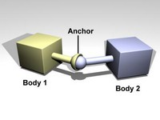
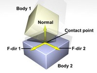
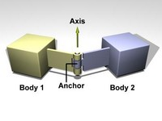
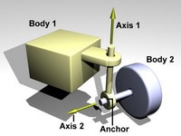
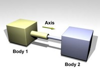
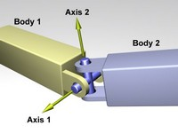

Xtreme3D поддерживает ODE - популярный свободный физический движок. При помощи ODE вы можете создать объекты, которые ведут себя как в реальности, т.е. подчинены законам физики. Такие объекты называются телами (body). Тела в ODE разделяются на два основных типа - статические и динамические. Динамические тела подчинены различным силам (если быть точным, сумме пользовательских сил и их моментов, а также силы тяжести), которые приводят их в движение. Статические тела неподвижны.
Все тела в ODE представлены геометрическими объектами, определяющими характер их взаимодействий. Эти объекты (геометрии) включают сферу, прямоугольный параллелепипед, плоскость, конус, цилиндр, капсулу и полигональную сетку (меш). Также поддерживаются статические ландшафты. Обратите внимание, что не все геометрии поддерживают обнаружение столкновений со всеми остальными - подробнее об этом см. в описании функций.
Тела соединяются друг с другом при помощи сочленений (joint). Это невидимые объекты, которые удерживают тела на некотором расстоянии и/или под определенным углом относительно друг от друга, одновременно предоставляя им ограниченную свободу движения или вращения.
Когда сочленение создано, ничто не препятствует его движению в любом направлении. Этот диапазон движений может быть ограничен при помощи остановок (stops) в сочленении. Угол или позиция сочленения будут предохранены от достижения меньше заданного минимального порога или превышения заданного верхнего порога.
Так же как и остановки, многие типы сочленений могут иметь двигатели (motors). Двигатели прикладывают вращающую или линейную силу к сочленениям для достижения желаемой скорости в точке вращения или скольжения. Двигатели имеют два параметра: желаемая скорость и максимальная сила, с помощью которой может быть достигнута эта скорость.
Примечание: для использования ODE необходимо скопировать файл ode64s.dll в папку с проектом.
real OdeManagerCreate();
Создает менеджер ODE.
real OdeManagerDestroy();
Уничтожает менеджер ODE.
real OdeManagerStep(real dt);
Совершает шаг интегрирования - вычисления новых состояний тел ODE.
dt - размер шага времени в секундах.real OdeManagerGetNumContactJoints();
Сведения отсутствуют.
real OdeManagerSetGravity(real x, real y, real z);
Задает вектор гравитации. Для Земли этот вектор будет соответствовать (0, -0.981, 0).
x, y, z - вектор гравитации.real OdeManagerSetSolver(real osm);
Задает метод решения ограничений (osm). Доступны следующие значения:
osmStep = 0 - используется метод большой матрицы, который требует времени расчета порядка m? и памяти порядка m?, где m - общее количество строк матрицы. Для больших систем требуется много памяти, скорость работы будет низка, но на текущий момент это самый точный метод.osmStepFast = 1 - для больших систем osmStep может потребовать много памяти и времени для расчета. osmStepFast обеспечивает альтернативный путь решения этой проблемы, жертвуя точностью. osmStepFast не зависит от количества итераций в одном шаге. Используйте этот метод, когда у вас имеется немного параметров, влияющих на стабильность, и вы хотите использовать преимущества скорости или расхода памяти. Другой совет использования osmStepFast - это сразу ориентироваться на этот метод, если вы знаете, что будете строить большие миры с большим количеством физических объектов. Последний совет по использованию osmStepFast - это использовать его только там, где это необходимо. Поскольку osmStepFast использует такие же структуры тела и мира как и osmStep, то можно переключатся между ними.osmQuickStep = 2 - используется итеративный метод, который требует времени порядка m*N и памяти порядка m, где m - общее количество строк матрицы и N - количество итераций. Для больших систем это работает намного быстрее, чем osmStep, но менее точно. osmQuickStep отлично подходит для большого количества объектов, особенно вместе с авто-выключением (см. ниже). Тем не менее, имеет не очень хорошую точность для неустойчивых систем (near-singular). Система может становиться неустойчивой, когда используются контакты с сильным трением, двигатели и определенные составные структуры - например, робот с несколькими ногами. Увеличение итераций в osmQuickStep может немного помочь, но не сильно, если система неустойчива.real OdeManagerSetIterations(real iterations);
Задает количество итераций, которые использует метод osmQuickStep.
iterations - количество итераций (по умолчанию 20).real OdeManagerSetMaxContacts(real maxcontacts);
Сведения отсутствуют.
maxcontacts - cведения отсутствуют.real OdeManagerSetVisible(real mode);
Переключает режим видимости геометрии тел. Тела отображаются в виде каркасных моделей. По умолчанию видимость выключена.
mode - true или false.real OdeManagerSetGeomColor(real color);
Устанавливает цвет отображения линий геометрии тел. По умолчанию цвет красный (255, 0, 0).
color - цвет.real OdeWorldSetAutoDisableFlag(real flag);
Каждое тело может быть включено (enabled) или выключено (disabled). Включенные тела участвуют в симуляции, в то время как выключенные тела деактивированы, и их состояния не обновляются во время шагов симуляции. Новые тела всегда создаются во включенном состоянии. Выключенные тела, которые соединены сочленениями (joint) с включенными телами, автоматически включаются на следующем шаге симуляции. Выключенные тела не тратят время процессора, поэтому неподвижные тела надо отключать. Это может быть сделано автоматически при помощи возможностей автовыключения (AutoDisable).
Если флаг автовыключения установлен, то тела будут автоматически выключаться, если:
Тело считается бездействующим, если величина линейной и угловых скоростей меньше заданного порога. Таким образом, каждое тело имеет пять параметров автовыключения: флаг включения (flag), количество шагов бездействия (steps), время бездействия (time), пороги линейной (linear threshold) и угловой (angular threshold) скорости. Только что созданные тела берут эти параметры из менеджера ODE.
flag - true или false (по умолчанию false).real OdeWorldSetAutoDisableLinearThreshold(real velocity);
Задает порог линейной скорости автовыключения.
velocity - линейная скорость (по умолчанию 0.01).real OdeWorldSetAutoDisableAngularThreshold(real velocity);
Задает порог угловой скорости автовыключения.
velocity - угловая скорость (по умолчанию 0.01).real OdeWorldSetAutoDisableSteps(real steps);
Задает количество шагов бездействия автовыключения.
steps - количество шагов (по умолчанию 10).real OdeWorldSetAutoDisableTime(real time);
Задает время бездействия автовыключения.
time - время (по умолчанию 0).real OdeStaticCreate(real object);
Создает статическое тело и возвращает указатель на него. Объект object выступает в роли объекта привязки - то есть, для того, чтобы тело было видимо, необходимо создать соответствующий объект Xtreme3D. Другими словами, функция создает физическую модель в ODE для объекта Xtreme3D. После привязки объекта к статическому телу, его все еще можно перемещать обычными функциями Xtreme3D.
object - указатель на объект.real OdeDynamicCreate(real object);
Создает динамическое тело и возвращает указатель на него. Объект object выступает в роли объекта привязки - то есть, для того, чтобы тело было видимо, необходимо создать соответствующий объект Xtreme3D. Другими словами, функция создает физическую модель в ODE для объекта Xtreme3D. После привязки объекта к динамическому телу, он полностью подчиняется ODE и его невозможно перемещать обычными функциями Xtreme3D.
object - указатель на объект.real OdeTerrainCreate(real terrain);
Создает тело-ландшафт и возвращает указатель на него. Это особый вид статического тела, который использует объект ландшафта (Terrain) для столкновений с другими телами. Обнаружение столкновений ландшафта с мешами (Trimesh) не поддерживается.
terrain - указатель на ландшафт.real OdeDynamicCalculateMass(real object);
Вычисляет массу и тензор инерции динамического тела исходя из составляющих его геометрий и их плотностей. Эту функцию следует вызывать, если вы изменили плотность его геометрии.
object - указатель на объект.real OdeDynamicCalibrateCenterOfMass(real object);
Сведения отсутствуют.
object - указатель на объект.real OdeDynamicAlignObject(real object);
Сведения отсутствуют.
object - указатель на объект.real OdeDynamicEnable(real object, real mode);
Включает или выключает динамическое тело. Включенные тела участвуют в симуляции, в то время как выключенные тела деактивированы и их состояния не обновляются. Новые тела всегда создаются во включенном состоянии. Выключенные тела, которые соединены сочленениями с включенными телами, автоматически включаются на следующем шаге симуляции. Поэтому, если требуется выключить такие тела, необходимо выключить и их сочленения.
object - указатель на объектmode - true или false.real OdeDynamicSetAutoDisableFlag(real object, real flag);
Задает флаг автовыключения динамического тела.
flag - true или false.real OdeDynamicSetAutoDisableLinearThreshold(real object, real velocity);
Задает порог линейной скорости автовыключения динамического тела.
velocity - линейная скорость.real OdeDynamicSetAutoDisableAngularThreshold(real object, real velocity);
Задает порог угловой скорости автовыключения динамического тела.
velocity - угловая скорость.real OdeDynamicSetAutoDisableSteps(real object, real steps);
Задает количество шагов бездействия автовыключения динамического тела.
steps - количество шагов.real OdeDynamicSetAutoDisableTime(real object, real time);
Задает время бездействия автовыключения динамического тела.
time - время.real OdeDynamicAddForce(real object, real x, real y, real z);
Прикладывает силу в абсолютных координатах к центру массы динамического тела.
object - указатель на объектx, y, z - вектор силы.real OdeDynamicAddForceAtPos(real object, real x, real y, real z, real px, real py, real pz);
Прикладывает силу в абсолютных координатах к заданной абсолютной точке динамического тела.
object - указатель на объектx, y, z - абсолютный вектор силыpx, py, pz - абсолютные координаты точки.real OdeDynamicAddForceAtRelPos(real object, real x, real y, real z, real px, real py, real pz);
Прикладывает силу в абсолютных координатах к заданной локальной точке динамического тела.
object - указатель на объектx, y, z - абсолютный вектор силыpx, py, pz - локальные координаты точки.real OdeDynamicAddRelForce(real object, real x, real y, real z);
Прикладывает силу в локальных координатах к центру массы динамического тела.
object - указатель на объектx, y, z - локальный вектор силы.real OdeDynamicAddRelForceAtPos(real object, real x, real y, real z, real px, real py, real pz);
Прикладывает силу в локальных координатах к заданной абсолютной точке динамического тела.
object - указатель на объектx, y, z - локальный вектор силыpx, py, pz - абсолютные координаты точки.real OdeDynamicAddRelForceAtRelPos(real object, real x, real y, real z, real px, real py, real pz);
Прикладывает силу в локальных координатах к заданной локальной точке динамического тела.
object - указатель на объектx, y, z - локальный вектор силыx, y, z - локальный вектор силы.real OdeDynamicAddTorque(real object, real x, real y, real z);
Прикладывает к динамическому телу момент силы, вращающий вокруг абсолютной оси.
object - указатель на объектx, y, z - абсолютный вектор оси вращения.real OdeDynamicAddRelTorque(real object, real x, real y, real z);
Прикладывает к динамическому телу момент силы, вращающий вокруг локальной оси.
object - указатель на объектx, y, z - локальный вектор оси вращения.real OdeDynamicSetVelocity(real object, real x, real y, real z);
Задает скорость динамического тела.
object - указатель на объектx, y, z - абсолютный вектор скорости.real OdeDynamicSetAngularVelocity(real object, real x, real y, real z);
Задает угловую скорость динамического тела.
object - указатель на объектx, y, z - абсолютный вектор угловой скорости.real OdeDynamicGetVelocity(real object, real index);
Возвращает скорость динамического тела.
object - указатель на объектindex - индекс координаты (0 = X, 1 = Y, 2 = Z).real OdeDynamicGetAngularVelocity(real object, real index);
Возвращает угловую скорость динамического тела.
object - указатель на объектindex - индекс координаты (0 = X, 1 = Y, 2 = Z).real OdeDynamicSetPosition(real object, real x, real y, real z);
Задает позицию динамического тела.
object - указатель на объектx, y, z - координаты позиции.real OdeDynamicSetRotationQuaternion(real object, real x, real y, real z, real w);
Задает поворот динамического тела, выраженный кватернионом.
object - указатель на объектx, y, z, w - кватернион поворота.real OdeDynamicGetContactCount(real object);
Возвращает количество контактных точек динамического тела, обнаруженных во время последней проверки столкновений.
object - указатель на объект.real OdeStaticGetContactCount(real object);
Возвращает количество контактных точек статического тела, обнаруженных во время последней проверки столкновений.
object - указатель на объект.real OdeAddPlane(real object);
Добавляет телу геометрию плоскости и возвращает указатель на нее. Геометрия плоскости ODE, в отличие от примитива плоскости Xtreme3D, бесконечна. Кроме того, плоскость - неперемещаемая геометрия. Это значит, что ее позиция и угол поворота постоянны. Обнаружение столкновений между плоскостью и мешами (Trimesh) не поддержиывается.
object - указатель на объект.real OdeAddSphere(real object, real x, real y, real z, real radius);
Добавляет телу геометрию сферы и возвращает указатель на нее.
object - указатель на объектx, y, z - координаты центра сферы относительно центра массы телаradius - радиус сферы.real OdeAddBox(real object, real x, real y, real z, real width, real height, real depth);
Добавляет телу геометрию прямоугольного параллелепипеда и возвращает указатель на нее.
object - указатель на объектx, y, z - координаты центра параллелепипеда относительно центра массы телаwidth, height, depth - длины сторон параллелепипеда.real OdeAddCylinder(real object, real x, real y, real z, real length, real radius);
Добавляет телу геометрию цилиндра и возвращает указатель на нее. Обнаружение столкновений между цилиндром и мешами (Trimesh) не поддерживается.
object - указатель на объектx, y, z - координаты центра цилиндра относительно центра массы телаlength - длина цилиндраradius - радиус основания цилиндра.real OdeAddCone(real object, real x, real y, real z, real length, real radius);
Добавляет телу геометрию конуса и возвращает указатель на нее.
object - указатель на объектx, y, z - координаты центра конуса относительно центра массы телаlength - длина конусаradius - радиус основания конуса.--
real OdeAddCapsule(real object, real x, real y, real z, real length, real radius);
Добавляет телу геометрию капсулы и возвращает указатель на нее. Капсула похожа на цилиндр, за исключением того, что на ее концах расположено по полусфере. В длину капсулы верхушки не входят. Радиус верхушек равен радиусу цилиндра.
object - указатель на объектx, y, z - координаты центра капсулы относительно центра массы телаlength - длина капсулыradius - радиус капсулы.real OdeAddTriMesh(real object, real mesh);
Добавляет телу геометрию полигональной сетки (меш) и возвращает ее id. Предполагается, что объект является объектом свободной формы (Freeform). Меш может быть присвоен как статическому, так и динамическому телу, однако взаимные столкновения двух мешей, к сожалению, не обнаруживаются. Также меш не сталкивается ландшафтом и геометриями плоскости и цилиндра.
object - указатель на объектmesh - индекс меша, который нужно добавить телу.real OdeElementSetDensity(real element, real density);
Задает плотность геометрии.
element - указатель на геометриюdensity - плотность.real OdeSurfaceEnableRollingFrictionCoeff(real body, real mode);
Включает или выключает трение качения для поверхности тела. Если включено, коэффициент трения должен быть установлен функцией OdeSurfaceSetRollingFrictionCoeff.
body - указатель на телоmode - true или false.real OdeSurfaceSetRollingFrictionCoeff(real body, real rfc);
Устанавливает коэффициент трения качения для поверхности тела. Значение должно лежать в промежутке (0..1). 0 означает отсутствие трения (тела будут катиться бесконечно), 1 - максимальное трение (тела не катятся).
body - указатель на телоrfc - коэффициент трения качения.real OdeSurfaceSetBounce(real body, real bounce);
Устанавливает параметр упругости поверхности тела. Значение 0 означает, что поверхность абсолютно не упруга, 1 - максимальная упругость.
Параметр должен быть определен только в случае установки соответствующего флага в OdeSurfaceSetMode.
bounce - упругость.real OdeSurfaceSetBounceVel(real body, real vel);
Устанавливает минимальную скорость, необходимую для упругости (в м/с) поверхности тела. Скорость ниже этого порога определяет параметр упругости равным 0.
Параметр должен быть определен только в случае установки соответствующего флага в OdeSurfaceSetMode.
body - указатель на телоvel - линейная скорость.real OdeSurfaceSetMode(real body, real mu2, real fdir1, real bounce, realsoftERP, real softCFM, real motion1, real motion2, real slip1, real slip2);
Устанавливает флаги поверхности тела. Это комбинация следующих флагов:
Mu2 - если не установлен, то используется ? для обоих направлений трения. Если установлен, то ? используется для первого направления трения, а ?2 для второго направления трения.
FDir1 - если установлен, то fdir1 берется первым направлением трения. В противном слyчае, fdir1 рассчитывается автоматически как перпендикуляр к нормали контакта (в этом слyчае результирующие направление непредсказуемо).
Bounce - если установлен, то поверхность считается упругой; другими словами, тела будут пружинить друг от друга. Точное значение упругости определяется функцией OdeSurfaceSetBounce.
SoftERP - если установлен, то параметр уменьшения ошибки нормали контакта контролируется функцией OdeSurfaceSetSoftERP.
SoftCFM - если установлен, то смешивающая сила соединения нормали контакта контролируется функцией OdeSurfaceSetSoftCFM.
Motion1 - если установлен, то предполагается, что поверхность геометрии движется независимо от тела. Если этот флаг установлен, то функцией OdeSurfaceSetMotion1 задает скорость поверхности в первом направлении трения.
Motion2 - то же что и выше, но во втором направлении трения.
Slip1 - скольжение, зависящее от силы FDS в первом направлении трения.
Slip2 - скольжение, зависящие от силы FDS во втором направлении трения.
Первое направление трения - это вектор, вдоль которого прилагается сила трения, перпендикулярный нормали контакта. Второе направления трения вычисляется как перпендикуляр к нормали контакта и fdir1.
true или falsetrue или falsetrue или falsetrue или falsetrue или falsetrue или falsetrue или falsetrue или falsetrue или false.real OdeSurfaceSetMu(real body, real mu);
Устанавливает коэффициент трения ? для первого направления трения поверхности тела. Значение 0 дает отсутствие трения в поверхности.
body - указатель на телоmu - коэффициент трения ?.real OdeSurfaceSetMu2(real body, real mu2);
Устанавливает ?2 - необязательный коэффициент трения для второго направления трения поверхности тела.
Параметр должен быть определен только в случае установки соответствующего флага в OdeSurfaceSetMode.
body - указатель на телоmu2 - коэффициент трения ?2.real OdeSurfaceSetSoftERP(real body, real erp);
Устанавливает ERP (Error Reduction Parameter - параметр уменьшения ошибки) поверхности тела - параметр, контролирующий силу возвращения тел на правильные позиции во время каждого шага для компенации ошибок при сочленении двух тел. Это необходимо, чтобы тела занимали определенное положение и ориентацию друг относительно друга.
ERP принимает значение от 0 до 1 и определяет пропорцию, в которой ошибка в сочленении будет исправляться в следующем шаге симуляции. Если ERP = 0, то корректирующая сила прилагаться не будет, и тела будут перемещаться в соответствии с ходом симуляции. Если ERP = 1, то будет предприниматься попытка исправить все ошибки в сочленениях на следующем шаге симуляции. Тем не менее, устанавливать ERP = 1 не рекомендуется, поскольку ошибки в сочленении нельзя полностью устранить из-за различных внутренних округлений. Рекомендуется устанавливать значения от 0.1 до 0.8 (0.2 - значение по умолчанию).
Глобальное значение ERP воздействует на большинство сочленений симуляции. Тем не менее, некоторые сочленения могут иметь локальные значения ERP, которые контролируют определенные аспекты их поведения.
Параметр должен быть определен только в случае установки соответствующего флага в OdeSurfaceSetMode.
body - указатель на телоerp - параметр уменьшения ошибки. real OdeSurfaceSetSoftCFM(real body, real cfm);
Устанавливает CFM (Сonstraint Force Mixing - cмешивающая сила соединения ) поверхности тела - параметр, контролирующий так называемое "мягкое" сочленение тел.
Большинство сочленений по своей природе "жесткие". Это значит, что сочленение находится в определенных условиях, которые никогда не могут быть нарушены. Например, шарик всегда должен быть в разъеме, а сгибание должно происходит вдоль одной линии. На практике сочленения могут быть нарушены непреднамеренным возникновением ошибок в системе, но с помощью параметра уменьшения ошибки можно откорректировать эти ошибки.
Но не все соединения жестки. "Мягкие" соединения разработаны для того, чтобы специально быть нарушенными. Например, контактное соединение, которое предотвращает сталкивающиеся объекты от взаимного проникновения, по умолчанию жестко: это выглядит так, как будто сталкивающиеся поверхности сделаны из стали. Но для симуляции материалов помягче можно сделать мягкое соединение, тем самым позволив при взаимодействии двух объектов иметь место естественному проникновению.
Если CFM установлен в 0, соединение будет жестким. Если в CFM установлено положительное число, то появляется возможность нарушать сочленение смещением. Другими словами, соединение становится мягким, и мягкость будет нарастать с увеличением CFM. Происходит здесь следующее: сочленению позволяется быть нарушенным пропорционально CFM раз, восстанавливая силу, которая нужна для удержания соединения. Утановка в CFM отрицательного значения может привести к непредсказуемым последствиям, включая снижение стабильности.
Параметр должен быть определен только в случае установки соответствующего флага в OdeSurfaceSetMode.
body - указатель на телоcfm - cмешивающая сила соединения.real OdeSurfaceSetMotion1(real body, real motion1);
Устанавливают скорость поверхности тела в первом направлении (в м/с).
Параметр должен быть определен только в случае установки соответствующего флага в OdeSurfaceSetMode.
body - указатель на телоmotion1 - линейная скорость.real OdeSurfaceSetMotion2(real body, real motion2);
Устанавливает скорость поверхности тела во втором направлении (в м/с).
Параметр должен быть определен только в случае установки соответствующего флага в OdeSurfaceSetMode.
body - указатель на телоmotion2 - линейная скорость.real OdeSurfaceSetSlip1(real body, real slip1);
Устанавливает коэффициент скольжения поверхности тела, зависящий от силы трения первого направления. Это эффект, который вынуждает контактирующие поверхности скользить относительно друг друга со скоростью, пропорциональной силе, приложенной по касательной к поверхности.
Параметр должен быть определен только в случае установки соответствующего флага в OdeSurfaceSetMode.
body - указатель на телоslip1 - коэффициент скольжения.real OdeSurfaceSetSlip2(real body, real slip2);
Устанавливает коэффициент скольжения поверхности тела, зависящий от силы трения второго направления.
Параметр должен быть определен только в случае установки соответствующего флага в OdeSurfaceSetMode.
body - указатель на телоslip2 - коэффициент скольжения.real OdeAddJointBall();
Создает сочленение типа Ball-and-socket ("шарик-в-разъеме") и возвращает указатель на него.
Это сочленение позволяет телам свободно вращаться вокруг заданной точки, но не дает им разойтись в стороны. Напоминает шарнирное соединение.

real OdeAddJointFixed();
Создает сочленение типа Fixed (фиксированное) и возвращает указатель на него.
Это сочленение сохраняет жесткую фиксированную позицию и ориентацию тел.

real OdeAddJointHinge();
Создает сочленение типа Hinge (сгибание) и возвращает указатель на него.
Это сочленение gозволяет телам вращаться вокруг заданной оси. Напоминает соединение в дверных петлях.

real OdeAddJointHinge();
Создает сочленение типа Hinge-2 (сгибание-2) и возвращает указатель на него.
Это сочленение похоже на два сочленения Hinge, соединенных последовательно, с разными осями сгибания. Например, это может быть колесо машины, где одна ось позволяет колесу поворачиваться, а вторая вращаться. Сочленение Hinge-2 имеет точку соединения и две оси сгибания. Ось 1 определяется относительно тела 1 (может быть осью поворота, если тело 1 - рама). Ось 2 определяется относительно тела 2 (может быть осью вращения колеса, если тело 2 - колесо).

real OdeAddJointSlider();
Создает сочленение типа Slider (скольжение) и возвращает указатель на него.
Это сочленение позволяет телам двигаться вдоль одной линии, не давая им вращаться относительно друг друга.

real OdeAddJointUniversal();
Создает сочленение типа Universal (универсальное) и возвращает указатель на него.
Имеет более сложную структуру. Оно похоже на сочленение "шарик-в-разъеме", y которого граничена степень свободы вращения. Если задать ось 1 для одного тела и ось 2 для второго перпендикулярно друг другу, их перпендикулярность будет сохраняться. Другими словами, можно сказать, что тела будут сохранять перпендикулярную ориентацию относительно своих осей. Универсальные сочленения проявляют себя в автомобилях, а именно при соединении двигателя с карданным валом, вращающимся вдоль оси машины.

real OdeJointSetObjects(real joint, real object1, real object2);
Присоединяет сочленение к телам. Если сочленение уже куда-то присоединено, то сначала оно будет отсоединено от старых тел. Для того, чтобы присоединить сочленение только к одному телу, надо установить object1 или object2 в ноль - ноль значит статическое окружение. Установка обоих этих параметров в ноль переведет сочленение в неопределенное состояние и оно не будет принимать участия в симуляции. Чтобы работать, некоторые сочленения, такие как сгибание-2 (hinge-2), обязательно должны быть присоединены к двум телам.
joint - указатель на сочленениеobject1, object2 - указатели на объекты.real OdeJointEnable(real joint, real mode);
Включает или выключает сочленение. Включенные сочленения участвуют в симуляции, в то время как выключенные - деактивированы и их состояния не обновляются. Новые сочленения всегда создаются во включенном состоянии.
joint - указатель на сочленениеmode - true или false.real OdeJointInitialize(real joint);
Сведения отсутствуют.
joint - указатель на сочленение.real OdeJointSetAnchor(real joint, real x, real y, real z);
Устанавливает точку соединения, или якорь (anchor) сочленения. Сочленение будет пытаться удержать два тела относительно этой точки.
joint - указатель на сочленениеx, y, z - координаты точки.real OdeJointSetAnchorAtObject(real joint, real object);
Сведения отсутствуют.
joint - указатель на сочленениеobject - указатель на объект.real OdeJointSetAxis1(real joint, real x, real y, real z);
Устанавливает вектор первой оси сочленения (axis-1). Функция может быть применена к следующим типам сочленений: сгибание (Hinge), скольжение (Slider), универсальное (Universal), сгибание-2 (Hinge-2).
joint - указатель на сочленениеx, y, z - единичный вектор.real OdeJointSetAxis2(real joint, real x, real y, real z);
Устанавливает вектор второй оси сочленения (axis-2). Функция может быть применена к следующим типам сочленений: универсальное (Universal), сгибание-2 (Hinge-2).
joint - указатель на сочленениеx, y, z - единичный вектор.real OdeJointSetBounce(real joint, real axis, real bounce);
Устанавливает упругость остановок в сочленении. Параметр восстановления лежит в диапазоне (0..1). 0 означает, что остановка совсем не упруга, 1 - максимальная упругость.
joint - указатель на сочленениеaxis - индекс оси сочленения (1 или 2)bounce - упругость.real OdeJointSetCFM(real joint, real axis, real cfm);
Устанавливает значение смешивающей силы соединения (CFM) в сочленении.
joint - указатель на сочленениеaxis - индекс оси сочленения (1 или 2)cfm - смешивающая сила соединения.real OdeJointSetFMax(real joint, real axis, real fmax);
Устанавливает максимальную линейную или вращающую силу, которую будет использовать двигатель сочленения для достижения желаемой скорости. Это значение всегда должно быть больше или равно нулю. Установка этого значения в ноль (значение по умолчанию) выключает двигатель.
joint - указатель на сочленениеaxis - индекс оси сочленения (1 или 2)fmax - сила.real OdeJointSetFudgeFactor(real joint, real axis, real ffactor);
В текущей реализации остановок и двигателей есть маленькая проблема: когда сочленение имеет остановку и двигатель, который пытается не допустить остановки, за один шаг времени может быть приложена слишком большая сила, вызывая "скачки" движения. Для масштабирования избыточной силы используется надстроечный показатель (fudge factor). Его значение должно лежать между нулем и единицей (значение по умолчанию). Если в сочленении видны скачки движения, значение должно быть уменьшено. Делая это значение меньше, можно уберечь двигатель от движения сочленения из положения остановки.
joint - указатель на сочленениеaxis - индекс оси сочленения (1 или 2)ffactor - значение надстроечного показателя.real OdeJointSetHiStop(real joint, real axis, real histop);
Устанавливает верхний порог угла или позиции. Для вращающихся сочленений это значение должно быть меньше числа pi, чтобы эффект был заметен. Если верхний порог меньше нижнего, то оба порога не дают никакого эффекта.
joint - указатель на сочленениеaxis - индекс оси сочленения (1 или 2)histop - верхний порог.real OdeJointSetLoStop(real joint, real axis, real lostop);
Устанавливает нижний порог угла или позиции. Для вращающихся сочленений это значение должно быть больше числа pi, чтобы эффект был заметен. Если нижний порог больше верхнего, то оба порога не дают никакого эффекта.
joint - указатель на сочленениеaxis - индекс оси сочленения (1 или 2)lostop - нижний порог.real OdeJointSetStopCFM(real joint, real axis, real cfm);
Устанавливает значение смешивающей силы соединения (CFM), используемой остановками. Вместе со значением ERP может быть использовано для получения более мягких остановок.
joint - указатель на сочленениеaxis - индекс оси сочленения (1 или 2)cfm - смешивающая сила соединения.real OdeJointSetStopERP(real joint, real axis, real erp);
Устанавливает параметр уменьшения ошибки (ERP), используемый остановками. Вместе со значением CFM может быть использовано для получения более мягких остановок.
joint - указатель на сочленениеaxis - индекс оси сочленения (1 или 2)erp - параметр уменьшения ошибки.real OdeJointSetVel(real joint, real axis, real velocity);
Устанавливает желаемую скорость двигателя.
joint - указатель на сочленениеaxis - индекс оси сочленения (1 или 2)velocity - линейная или угловая скорость.real OdeRagdollCreate(real actor);
Создает так называемый ragdoll ("тряпичную куклу") - физический контроллер для актера - и возвращает указатель на него. Ragdoll позволяет создать из анимированной модели безжизненное человеческое тело (и не только человеческое), которое подчиняется законам физики - подобная технология очень часто используется в шутерах и других action-играх.
actor - указатель на актера.real OdeRagdollHingeJointCreate(real x, real y, real z, real lostop, real histop);
Создает ragdoll-сочленение типа Hinge (сгибание) и возвращает указатель на него. Это сочленение позволяет кости актера вращаться вокруг заданной оси относительно родительской кости - как в локтевом или коленном суставах.
x, y, z - ось (единичный вектор)lostop, histop - нижний и верхний угловые пороги вращения (в радианах).real OdeRagdollUniversalJointCreate(real x1, real y1, real z1, real lostop1, real histop1, real x2, real y2, real z2, real lostop2, real histop2);
Создает ragdoll-сочленение типа Universal (универсальное) и возвращает указатель на него. Это сочленение позволяет кости актера вращаться вокруг двух заданных осей относительно родительской кости - как, например, в плечевом суставе.
x1, y1, z1 - первая ось (единичный вектор)lostop1, histop1 - нижний и верхний угловые пороги вращения для первой оси (в радианах)x2, y2, z2 - вторая ось (единичный вектор)lostop2, histop2 - нижний и верхний угловые пороги вращения для второй оси (в радианах).real OdeRagdollDummyJointCreate();
Создает фиксированное ragdoll-сочленение и возвращает указатель на него. Фактически, кость, вместо прикрепления посредством сочленения, просто объединяется со своей родительской костью в одно динамическое тело ODE.
real OdeRagdollBoneCreate(real ragdoll, real ragjoint, real boneid, real parentbone);
Создает ragdoll-кость - физическую модель для кости актера. Для адекватного ragdoll нужно создать такую для каждой кости в скелете актера.
ragdoll - указатель на объект ragdollragjoint - указатель на ragdoll-сочленение, которое нужно использовать для соединения данной кости к родительскойboneid - индекс кости актера. Этот индекс можно узнать по имени кости, при помощи функции ActorGetBoneByNameparentbone - указатель на родительскую ragdoll-кости. Если в этот параметр передать 0, то будет создана корневая кость.real OdeRagdollBuild(real ragdoll);
Вычисляет ограничивающие объемы костей ragdoll. Эту функцию необходимо вызвать после создания всех костей.
ragdoll - указатель на объект ragdoll.real OdeRagdollEnable(real ragdoll, real mode);
Активирует или деактивирует ragdoll. При деактивированном ragdoll актер может воспроизводить анимацию. При активизации ragdoll актер плавно перейдет от текущего кадра анимации к физике. При деактивизации переход от физике к анимации будет резким.
ragdoll - указатель на объект ragdollmode - true или false.real OdeRagdollUpdate(real ragdoll);
Обновляет физику ragdoll. Эту функцию нужно вызывать после OdeManagerStep и перед Update.
ragdoll - указатель на объект ragdoll.